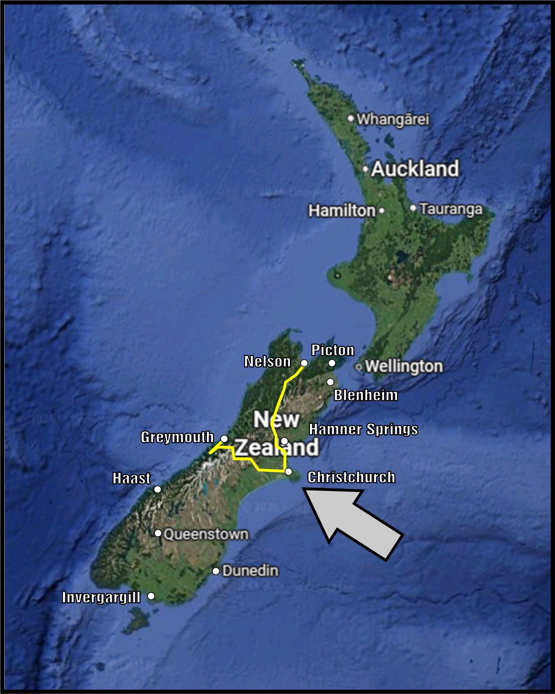
We stopped abrupty to visit the Otira Stagecoach Hotel that happened to have LoTR characters and other rather amazing art and character.
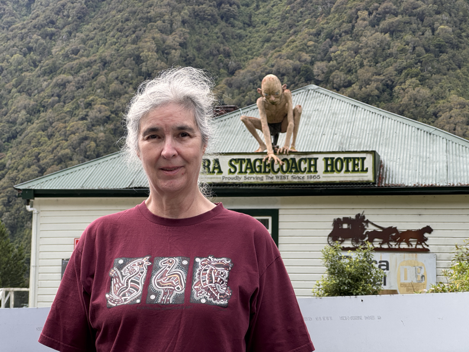
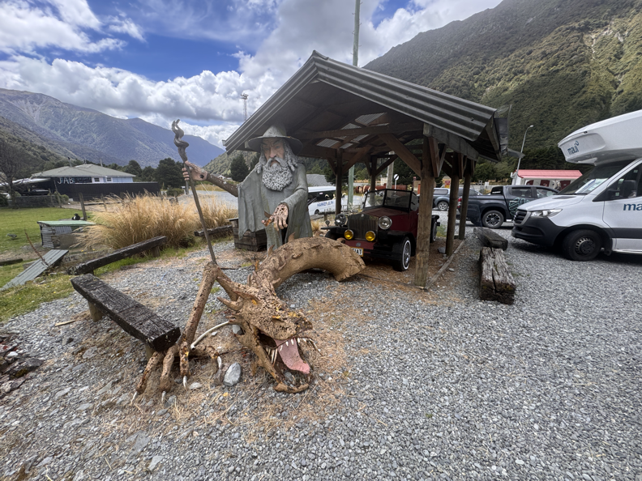
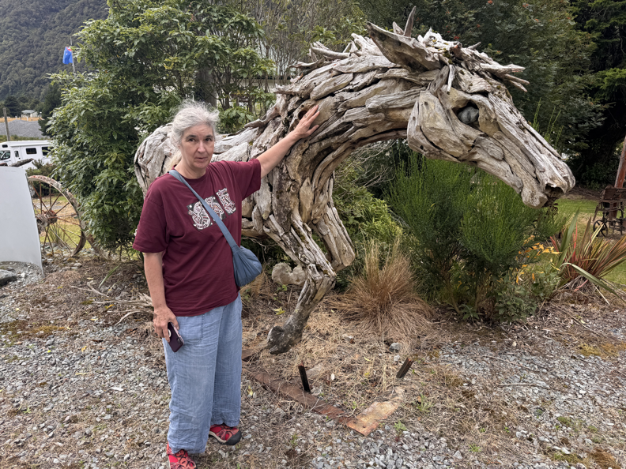
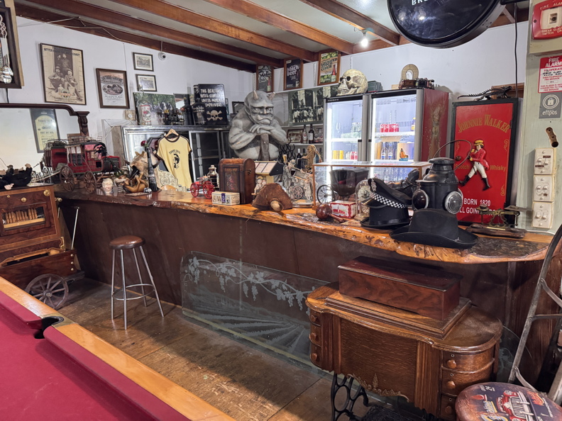
Arthur's Pass:
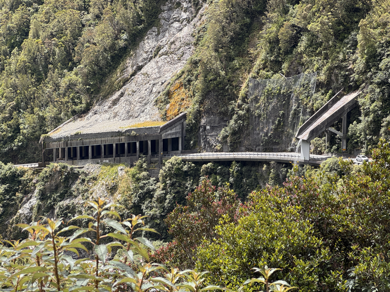
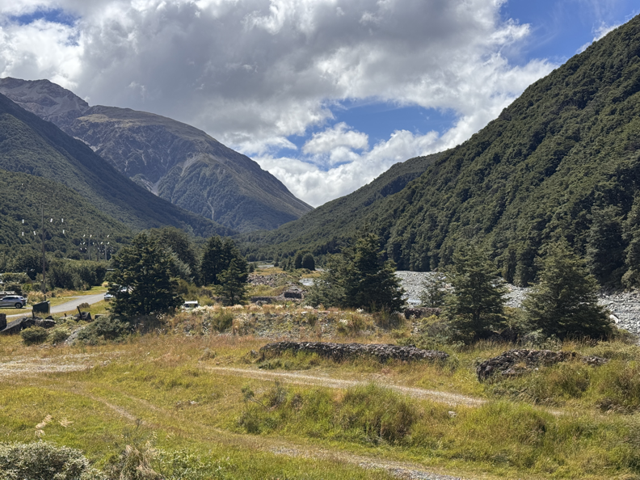
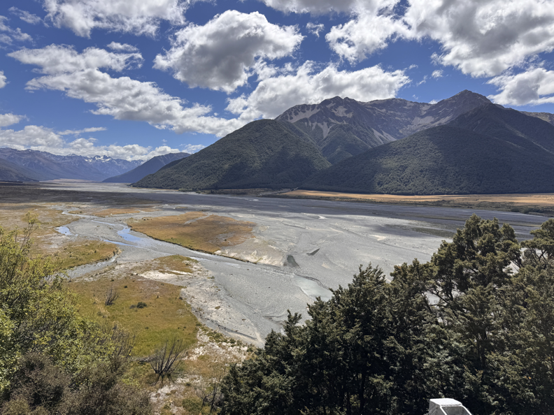
We visited a very windy and chilly Castle Hill.
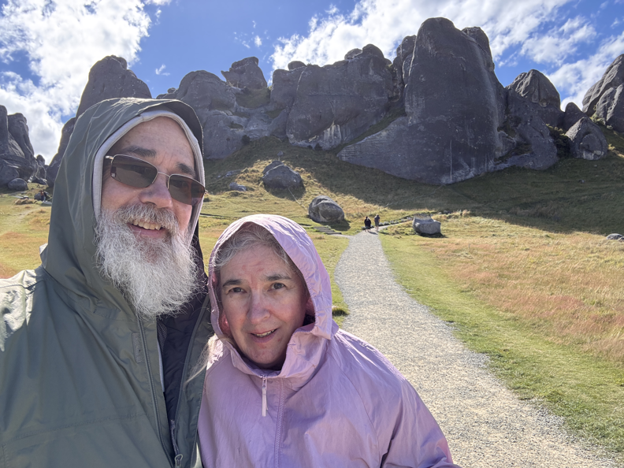
Visited folk in Christchurch. Met with Tracey/Birna!
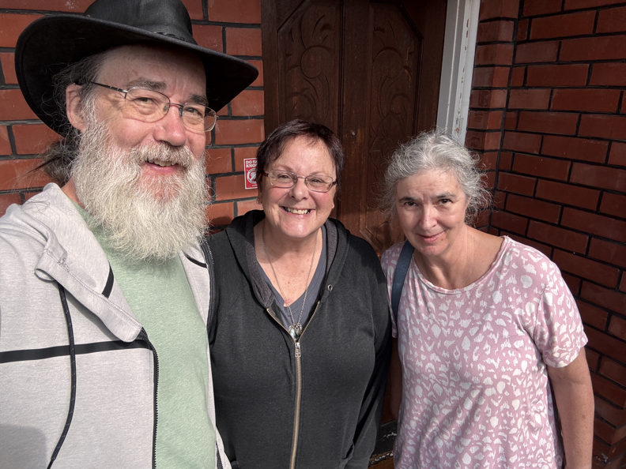
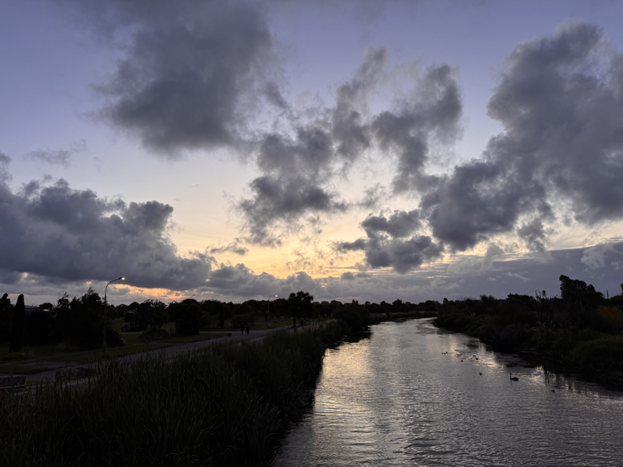
Visited the New Zealand Air Force Museum.
North American T-6 Harvard
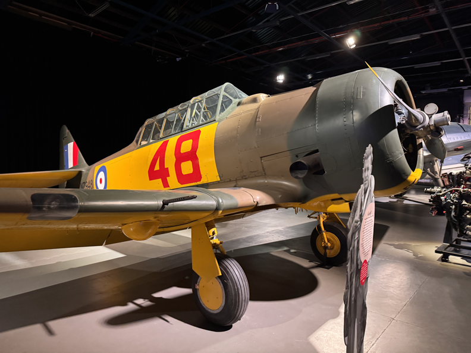
Supermarine Spitfire
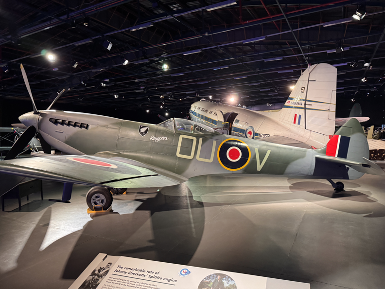
Sopwith Pup (Scout)
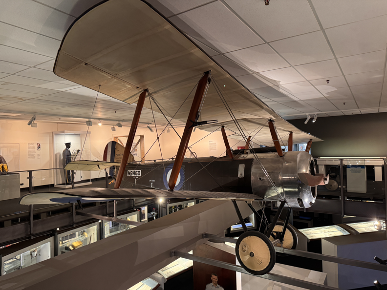
We headed North again to camp by Hamner Hot Springs, though we didn't go in.
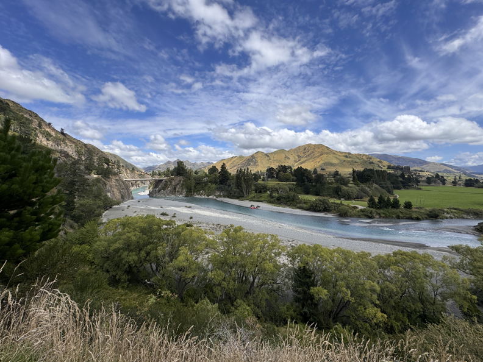
More Sequoia!
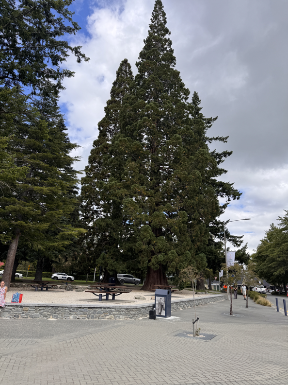
Took most of the afternoon to make it up to Nelson. A 4 hour trip plus stops to stretch our legs.
Visited Evison's Wall.
the Alpine Fault - a wall built to test how the land moves.
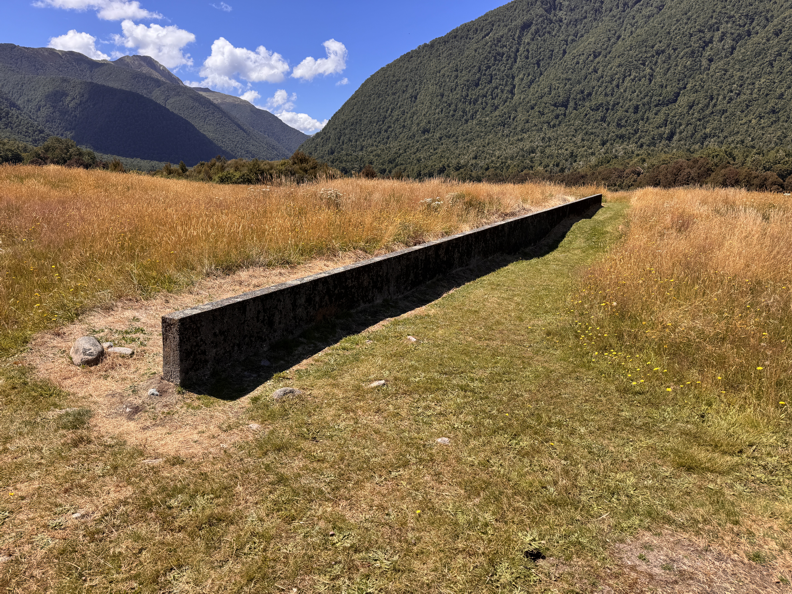
Had a nice walk in the woods on Daniel's Track, at the Campsite there.
This is the river from the Sluice-Box bridge.
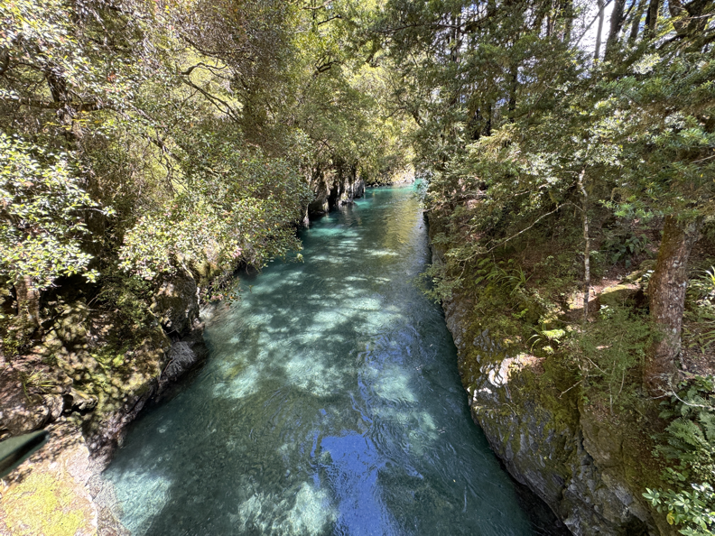
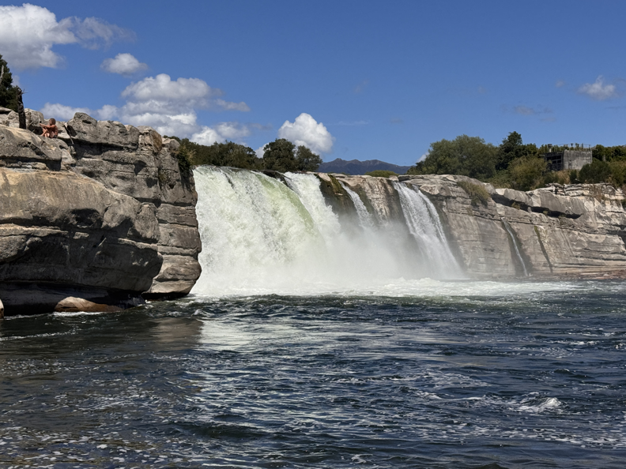
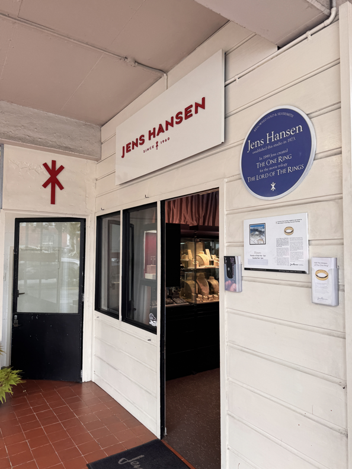
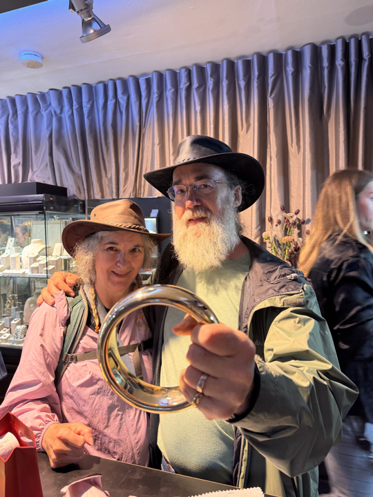